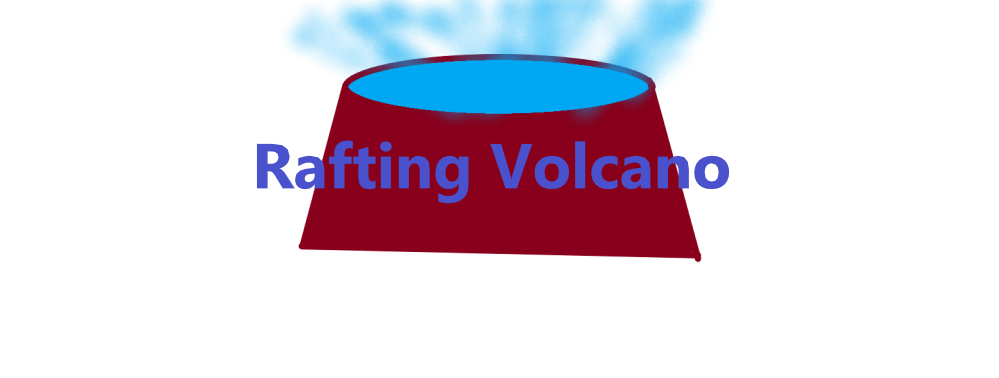

Overview
Purpose
The purpose of this Website is to build buiness revenu. This means I'll be looking to persuade people to not only come look at the website, but also to pique their interest into potentially going to go white water rafting. To do this I would have to make the website look fun. My first thought is to add bring colors, like orange, light blue or green, with pictures of kids and adults having fun.
Audience
While I would hope to get the attention of anyone who is looking to go a little outside their comfortzone, (like a wannabe daredevil,) I think it would be smart to attract families, especially kids. I would try to target the idea of saving money and creating memories so that its more appealing to the parents and gets the attention of college students who can't make a lot of money but want to feel like they aren't just "boring nerds." I would try to make the website more appealing for the youth, but try to add some extra pizzaz for adults so that college students don't feel like this buisness is for children. I would have to make the website easy to use so that grandparents or young kids can use it, easy to read. Also adding sales or noting when there will be sales could help attract not only college students, but parents who need to save money and want to create memories.
Branding
Website Logo
Style Guide
Color Palette
Palette URL:
https://coolors.co/396e94-e7c24f-a43312-20bf55| Primary | Secondary | Accent 1 | Accent 2 |
|---|---|---|---|
| [#396E94] | [#E7C24F] | [#AABD8C] | [#A43312] |
Typography
Heading Font: IM Fell French Canon SC
Paragraph Font: Lato
Normal paragraph example
The best Whitewater Rafting in Colorado, White Water Rafting Company offers rafting on the Colorado and Roaring Fork Rivers in Glenwood Springs. Since 1974, we have been family owned and operated, rafting the Shoshone section of Glenwood Canyon and beyond.
Colored paragraph example
Trips vary from mild and great for families, to trips exclusively for physically fit and experienced rafters. No matter what type of river adventures you are seeking, White Water Rafting Company can make it happen for you.
Navigation
Site Map
Wireframes
Home